Produkto ni San Nicoleño
Pottery(Panagdamili)
- The town of San Nicolas, Ilocos Norte is known for its clay pots called Banga.
In addition, there are also other products like bricks, tiles, garden pots, jar coin bank,
Lusob (braces in making a well) and many more.
| 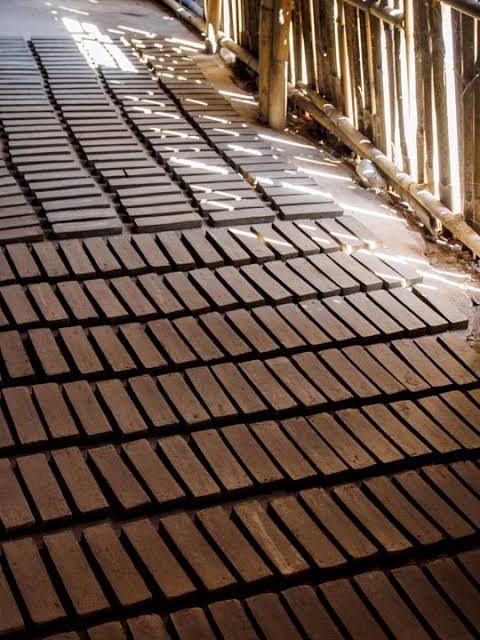 | 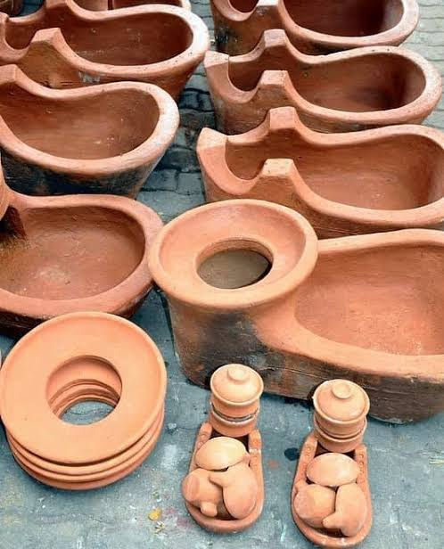 | 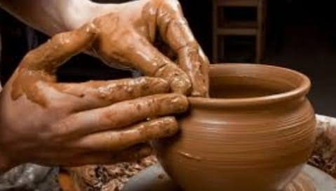 | 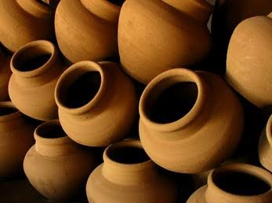 |
Blacksmith(Panagpanday)
- San Nicolas, Ilocos Norte, is one of the few places in the country where you can still
observe pandays at work, painstakingly crafting a variety of implements, including buneng (knife),
bolo (long-bladed weapon), kumpay (sickle), arado (plow) and even “Rambo” knife (jungle knife).
On market days, you can see an array of beautifully hammered knives, in all sizes and shapes in their
leather kallobans (sheaths), crafted also in the same town.
| 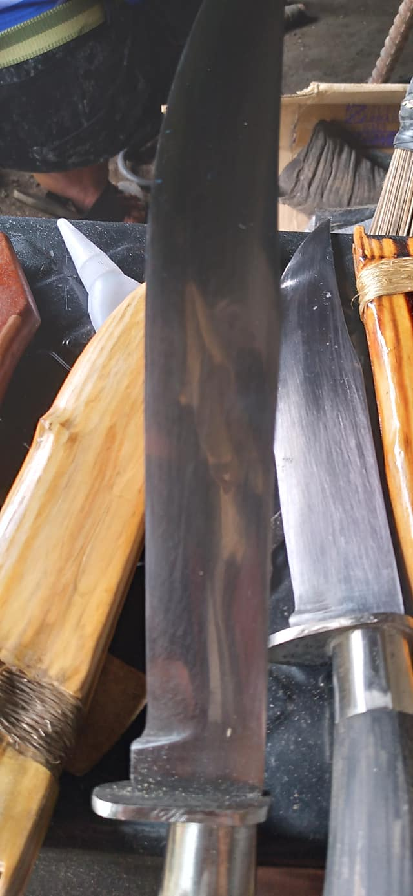 | 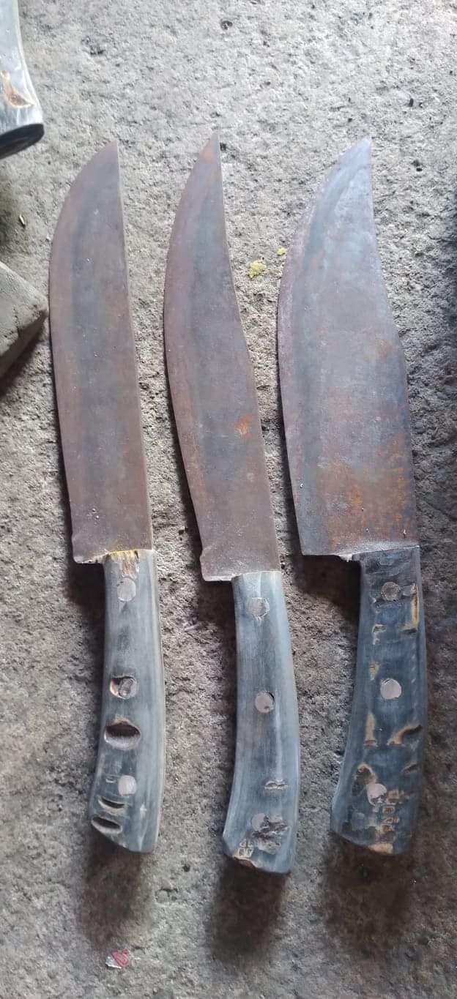 | 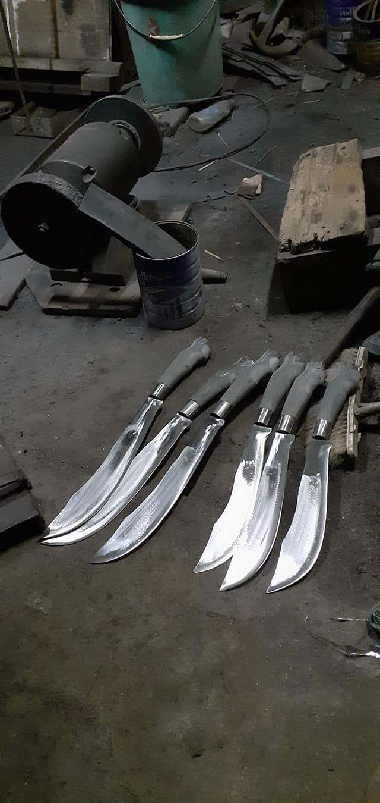 | 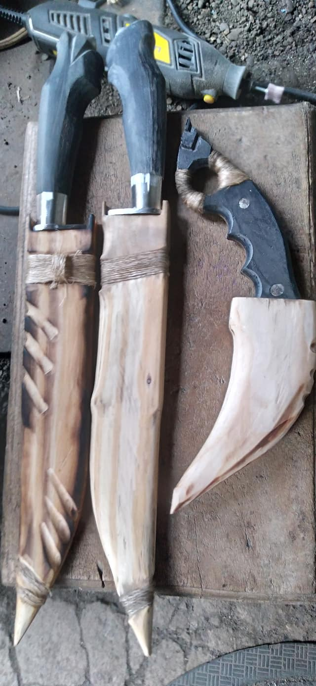 |
Farming(Panagtalon)
- Aside from pottery and blakcsmith, the main source of income of many San Nicoleño's is Farming.
Our product is rice and corn, but some San Nicoleño's was planting (tubo)sugarcane. They use
sugarcane for making vinegar which they sell on the market.
| 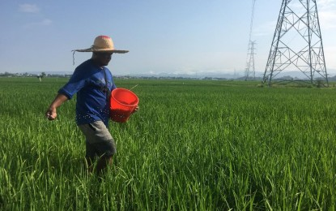 | 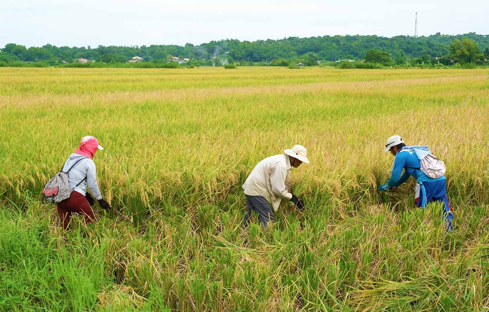 | 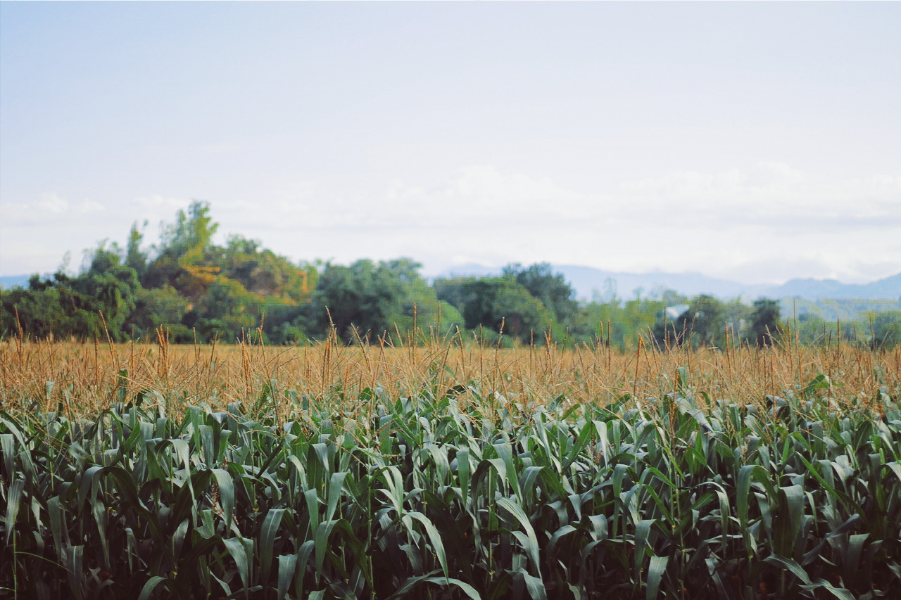 | 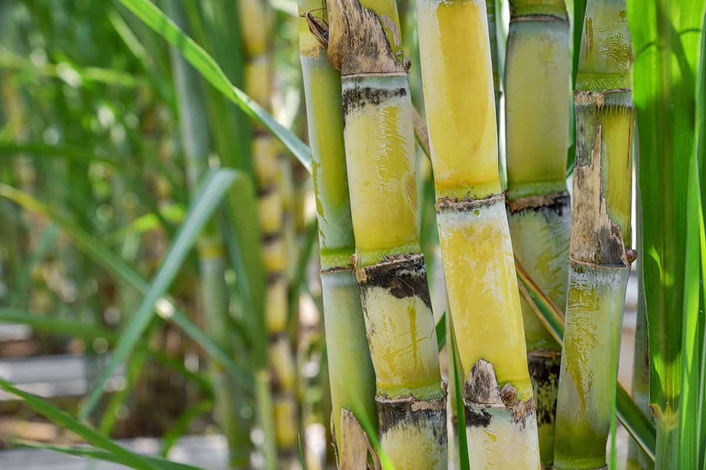 |